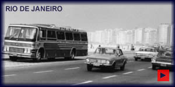

|

|
UM POUCO DE HISTÓRIA
No ano de 1966, em Curitiba - Paraná, com a
denominação de "Pluma Conforto e Turismo S/A",
com uma frota de 24 ônibus, 3 linhas, 3 filiais e
170 funcionários a empresa começava suas atividades:
Já são mais de 31 anos com profissionalismo
inteiramente voltado ao cliente, em uma trajetória de sucesso
e progresso, garantindo sua identidade a nível nacional e
internacional, sendo pioneira no Mercosul.
|
|